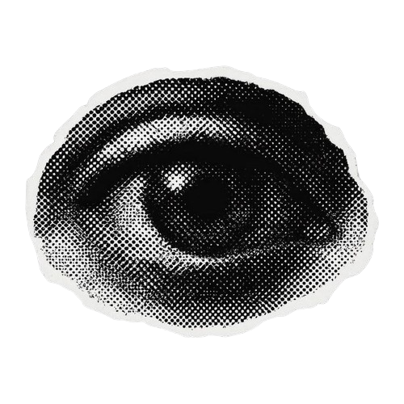

Enter Username
◉
MIORI'S DESKTOP
a place to stay a little longer
OPEN A FILE
↖
STAY A WHILE
↖
PLAY THE CD
↖
SOMEONE IS HERE
↖
OPEN A FILE
↖
STAY A WHILE
↖
PLAY THE CD
Personal archive / 001
Somewhere,
between
dream & day.
NOT EVERYTHING HERE IS ASLEEP.
01 / LISTENING ROOM
○
MIORI — PERSONAL MIX · 583921157
PLAY
网易云音乐
歌单 ↗
载入歌单…
0:00
0:00
⏮
▶
⏭
点击 CD 开始播放
在网易云中打开 ↗